Plugin Emplazamiento
El plugin de
Emplazamiento es
parte de la solución UML para la realización de
diagramas según la especificación UML 2.0 . Este diagrama
permite
modelar la configuración en tiempo de ejecución de los nodos de
procesamiento y los artefactos que se ejecutan en estos.
Los elementos propios que maneja este diagrama son:
- Nodo
- Dependencia
- Asociación
- Agregación
- Composición
Creación de un nuevo Diagrama de Clases.
Colosoft
soporta el Plugin Emplazamiento mediante la creación de un nuevo
diagrama de Emplazamiento.
Para la creación de un nuevo diagrama usando el Plugin se selecciona en
el Marco de Expresión: Nuevo, Ingeniero de Sistemas, Diagrama de
Emplazamiento.
Se ingresan los datos correspondientes al diagrama en la ventana que aparece.
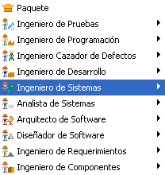 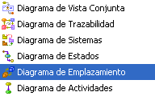
Figura 1. Creación de un diagrama de emplazamiento
El plugin posee una barra de herramientas con tres tipos de elementos característicos y con las relaciones que aplican al diagrama de emplazamiento, como se muestra en la Figura 2.
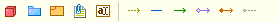
Figura 2. Barra de herramienta del plugin de emplazamiento
Nodo: Un nodo es un elemento físico que existe en tiempo de ejecución y que representa un recurso computacional. Los nodos suelen ser asociados a estereotipos como "Procesadores" si poseen capacidades de procesamiento, o simplemente como "Dispositivos".
Para crear un nuevo Nodo, haga clic en el icono Nodo de la barra de herramientas del Plugin y luego haga clic en un espacio en blanco del diagrama.
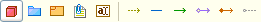
Figura 3. Creación de un nodo
La ventana emergente posee la especificación del nodo como se muestra en la Figura 4. En ella se pueden establecer el nombre del nodo y se puede estereotipar personalizada o seleccionando una opción de la lista "Processor" o "Device".
Puede agregarle perfiles que muestren iconos decorativos a los nodos, particularmente nodos procesadores o con capacidad de almacenamiento.
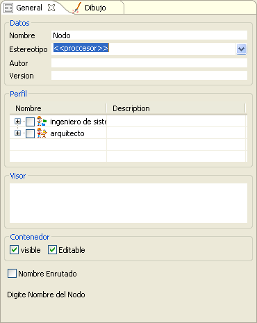
Figura 4. Datos de creación de un nodo
El nodo recién creado luce como sigue:
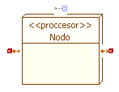
Figura 5. Representación de un nodo
Los iconos de expansión permiten crear relaciones de composición entre nodos desde y hacia el nodo.
También permiten crear notas para el nodo.
Relaciones: Para expandir la semántica entre nodos se generan relaciones entre estos, en tanto que los nodos son similares a las clases sus relaciones también pueden tener roles, multiplicadad y restricciones.
Roles: Los Roles permiten establecer atributos propios de los nodos tanto cliente como proveedor dentro de las múltiples relaciones que se pueden generar. Dependiendo del tipo de relación se podrá editar o no ciertos atributos del rol.
La ventana de especificación de las relaciones, en general tiene los siguientes controles:
En la primera pestaña "Texto" se podrá editar el estereotipo de la relación que se esté especificando, también se pueden escoger de entre los estereotipos predeterminados mas comúnmente usados para cada relación.
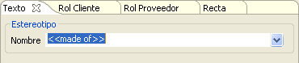
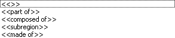
Figura 7. Estereotipos para un nodo
En la segunda pestaña "Rol Cliente" y en la tercer pestaña "Rol Proveedor" se especifican los atributos del nodo cliente o proveedor (según la dirección de la relación) de acuerdo a los diferentes roles que estas puedan tomar en la relación.
Las características para los atributos de un rol son:
- Nombre: del Rol que lo diferenciará de los otros roles.
- Tipo: Por defecto será el del nodos Cliente/Proveedor aunque puede ser seleccionado de la lista deplegable.
- Valor: valor del atributo del rol.
- Multiplicad: permite establecer la cardinalidad de la relación estableciendo la cantidad de instancias de nodos que pueden participar en la relación.
- Generar Rol: al activar este control auntomaticamente se creará un nuevo rol con el nombre especificado.
Para editar un Rol existente se escribe en el campo Nombre el mismo asociado al rol que se quiere modificar.

Figura 8. Datos generales para el rol cliente
También es editable la visibilidad correspondiente al rol : Publico, Protegido o Privado.

Figura 9. Visibilidad del contenedor para el rol
Los modificadores asociados al rol son los mismos que para los atributos: Transiente, Final, Volátil, Mutable. y su alcance Clasificador o Instancia.
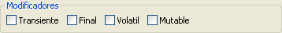
Figura 10. Marcadores y alcance para el rol
En el apartado Rol se listaran los diferentes atributos que han sido creados por los roles para el nodo Cliente o Proveedor respectivamente, dentro del diagrama y que pueden ser seleccionados al estan presentes como atributos del nodo.

Figura 11. Sección de atributos del rol
Relación de Dependencia: Para crear una nueva dependencia se hace clic sobre el icono Dependencia y luego se hace clic, primero, sobre el nodo cliente o aquello que hace "uso" de otro nodo, después se hace clic sobre el nodo proveedor.
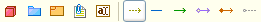
Figura 12. Creación del rol de dependencia
Inmediatamente se abre la ventana de especificación de la nueva relación, desplegando la primera pestaña de texto en la que se escribe el nombre correspondiente al estereotipo de la relación.
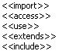
Figura 13. Estereotipos para el rol de dependencia
Las relaciones de dependencia permiten editar únicamente el nombre de los roles Cliente y Proveedor.
Las dependencias lucen como se muestra en la Figura 14.
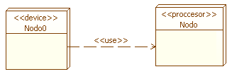
Figura 14. Relación de dependencia entre dos nodos
Relación de Asociación: Es la relación. más usada entre nodos, sulen representar conexiones fisicas entre los nodos.
Para crear una nueva dependencia se hace clic sobre el icono Asociación y luego se hace clic sobre uno de los nodos de larelación, después se hace clic en un segundo nodo.
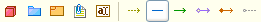
Figura 15. Creación de relación de asociación
La ventana emergente muestra la especificación de la relación, desplegando la primera pestaña de texto en la que se escribe el nombre correspondiente al estereotipo de la relación
.
Figura 16. Estereotipos de la relación de asociación
Las relaciones de asociación permiten editar todas las características de los roles descritas previamente.
Las Asociaciones lucen como se muestra en la Figura 17
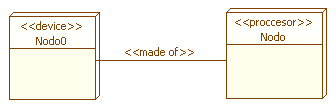
Figura 17. Relación de asociación entre dos nodos
Asociaciones Unidireccionales: Cuando la navegavilidad de una asociación se da en una sola dirección (De A hacia B sin retorno) la línea de la asociación se decora con una flecha indicando la dirección correcta en la cual se da la relación.
Para crear una nueva relación se hace clic sobre el icono Asociación Unidireccional y luego se hace clic primero sobre el nodo Cliente y seguidamente se hace clic en una segunda clase (Proveedor).
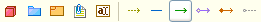
Figura 18. Creación de asociación unidireccional
La ventana emergente de especificación de la relación, como se muestra en la Figura 19. En ésta, desplegando la primera pestaña de texto en la que se escribe el nombre, se observa el estereotipo de la relación
.
Figura 19. Estereotipos de asociación unidireccional
La asociación unidireccional permite establecer los nombres de Rol cliente/Proveedor y editar las características únicamente del Rol Proveedor.
La Composición resultante se muestra en la Figura 20.
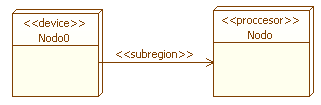
Figura 20. Asociación unidireccional entre dos nodos
Agregación: Asocia nodos que componen a otras nodos mas generales denotando "pertenencia", Las relaciones de agregación se muestran por una punta de flecha con forma de diamante apuntando hacia el nodo más general.
Para crear una nueva relación se hace clic sobre el icono Agregación y luego se hace clic primero sobre el nodo Cliente (más general) y después se hace clic en la segunda clase Proveedor (más especifico).
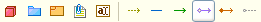
Figura 21. Creación de agregación
Aparece la ventana de especificación de la relación, desplegando la primera pestaña de Texto en la que se escribe el nombre correspondiente al estereotipo de la relación.
Figura 22. Estereotipos de agregación
La agregación permite establecer los nombres de Rol cliente/Proveedor y editar las características únicamente del Rol Proveedor.
La agregación luce como sigue:
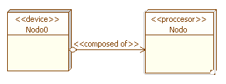
Figura 24. Agregación entre dos nodos
Composición: Asocia nodos que estan contenidos por nodos mas generales denotando "Es Parte De". Las relaciones de agregación se muestran por una punta de flecha con forma de diamante relleno apuntando hacia el nodo más general.
Para crear una nueva relación se hace clic sobre el icono Composición y luego se hace clic primero sobre el nodo Cliente (Más General) y después se hace clic en la segunda clase Proveedor (Más Especifico).
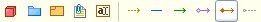
Figura 25 Estereotipos de la relación de agregación
Al crear la relación de agregación se muestra un ventana con la especificación de la relación, desplegando la primera pestaña de texto en la que se escribe el nombre correspondiente al estereotipo de la relación.
La composición permite establecer los nombres de Rol Cliente/Proveedor y editar las características únicamente del Rol Proveedor.
La agregación luce como sigue:
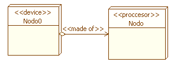
Figura 26. Agregación entre dos nodos
Sistema: el diagrama de nodos al igual que muchos otros diagramas permite la creación de Sistemas para la agrupación por niveles de los nodos.
Para crear un nuevo sistema, haga clic en el icono sistema y luego haga clic sobre un espacio en blanco del diagrama de nodos.
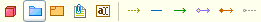
Figura 27. Creación de sistema
Aparece una ventana de especificación del sistema que permite editar el nombre de este el estereotipo, autor y versión, tal como se muestra en la FIgura 28. La ventana también permite ver los artefactos contenidos
Agregue perfiles al sistema y seleccione Contenedor Visible y editable para poder expandir el contenedor gráfico del sistema
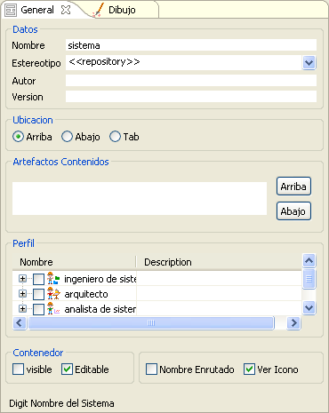
Figura 28. Propiedades para la creación de un sistema
Genere todos los nodos y relaciones correspondientes dentro del sistema de la misma forma que si los generase por fuera de un sistema.

Figura 29. Sistema conteniendo diversos nodos
*Nota: Los nodos y relaciones existentes fuera de un sistema no pueden arrastrarce o incluirse de alguna forma sobre un sistema nuevo, por lo tanto el contenido del sistema debe ser creado explicatamente sobre este.